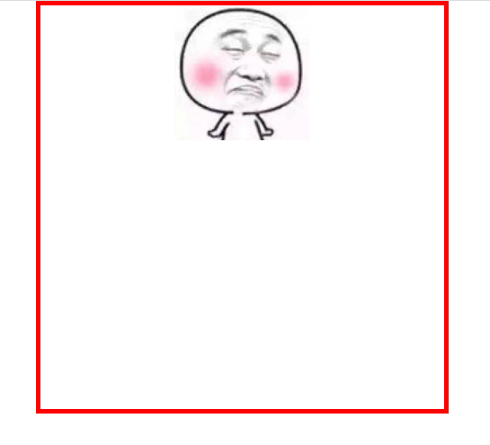
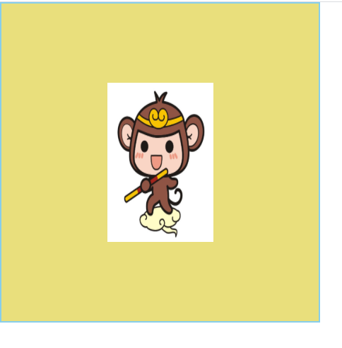
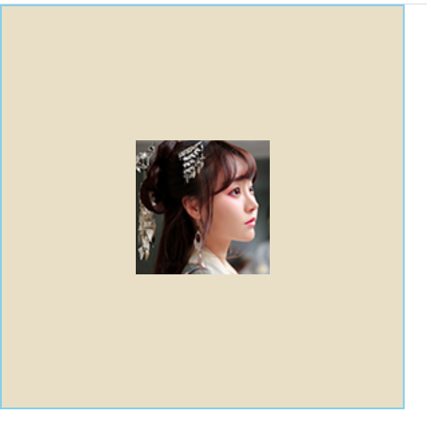
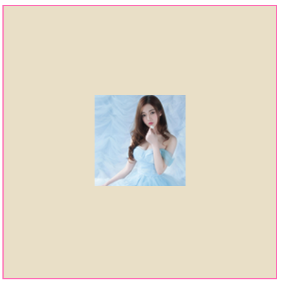
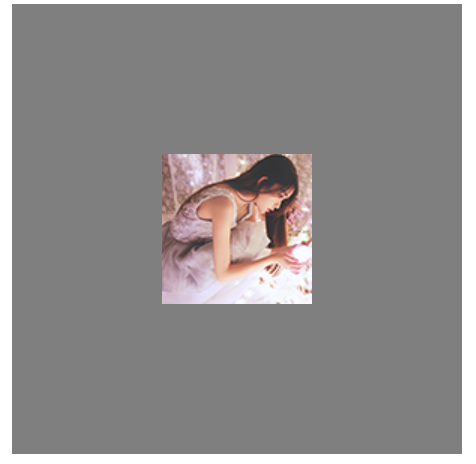

概述: 前端面试经典问题CSS居中方式❤️
1.水平居中的 margin：0 auto😊
这个是作用在子元素上，给父元素添加，父元素也会水平居中👍
1 | <style> |
如图所示：

2.水平居中 text-align: center😊
img的display:inline-block; 不受float影响,实质是在父元素上添加效果让它进行水平居中👍
1 | <style> |
如图所示:
3.水平垂直居中(一)定位和定位元素的margin减去宽高的一半😊
这种方法局限性在于需要知道垂直居中的宽高才能实现👍
1 | <style> |
如图所示:

4.水平垂直居中(二)定位和margin:auto😊
这个方法很实用，不需要知道宽高，不受其限制👍
1 | <style> |
如图所示:

5.水平垂直居中(三)绝对定位和transform😊
这个方法比较高级了，用到了形变，很多大佬喜欢使用这个方法进行定位，逼格很高的，学会后面试一定要用！这个是不需要知道居中元素的宽高就可以使用的，代码里的图片稍微有点大，改改宽高，仅此而已，在面试中大部分人会问如果不知道宽高该如何居中，答这个，加分！👍对transform不了解的同学可以查阅一下资料了解一下！
1 | <style> |
如图所示:
6.水平垂直居中(四)display:table-cell😊
其实就是把其变成表格样式，再按照表格的样式进行居中，很方便👍
1 | <style> |
如图所示:

7.水平垂直居中(五)flexBox居中😊
这个使用了CSS3的新特性flex，非常方便快捷，在移动端使用完美，pc端有兼容性问题，详细的flex知识点可以参考我的Flex布局👈这篇文章💪
1 | <style> |
如图所示:
8.水平垂直居中(六)vertical-align:middle😊
这方法不常见，但是有位网友补充后还是可以的，这个方法关键要有一个和容器一样高的的元素作为居中的一个参照，就如b元素一样👍
1 | <style> |
如图所示:
